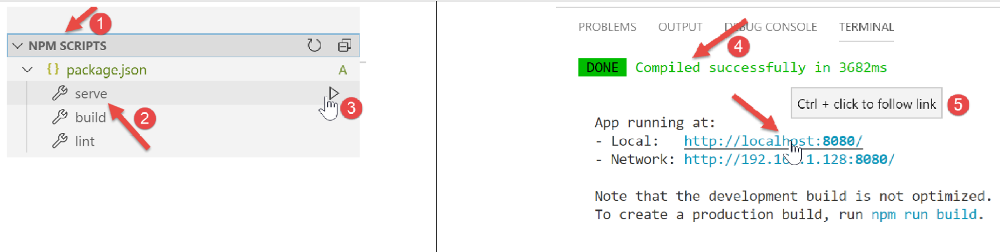
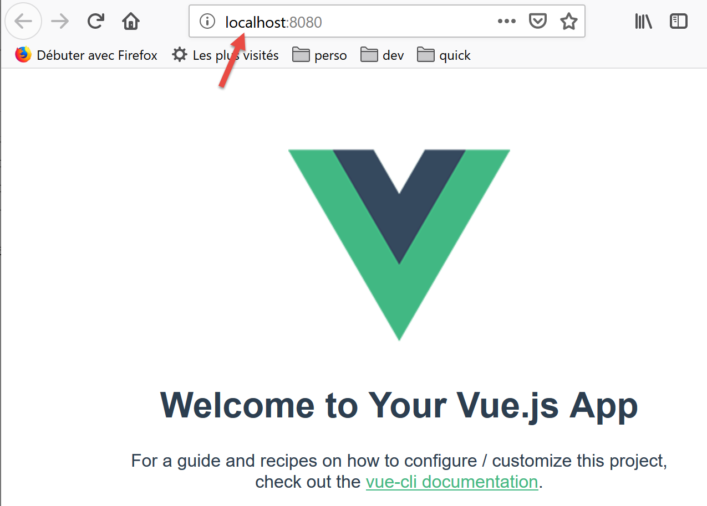

2. 搭建开发环境
我们采用文档[2]中详细描述的开发环境：
- 使用 Visual Studio Code (VSCode) 编写 JavaScript 代码；
- [node.js] 用于运行代码；
- 使用 [npm] 下载并安装所需的 JavaScript 库；
我们在 [VSCode] 中创建一个工作环境：

- 在 [1-5] 中，我们在 [VSCode] 中打开一个空的 [vuejs] 文件夹；

- 在 [8-10] 中，我们安装 [@vue/cli] 依赖项，这将使我们能够初始化一个 [Vue.js] 项目。该依赖项包含大量包（数百个）；
在同一终端中，接着输入命令 [vue create .]，这将在当前目录 (.) 中创建一个 [Vue.js] 项目：

- 在 [13] 中，将出现一系列问题以配置项目；

- 回答完所有问题后，系统将下载新包，并在当前目录中生成一个项目 [14]。
让我们来看看生成了什么。[package.json] 文件内容如下：
{
"name": "vuejs",
"version": "0.1.0",
"private": true,
"scripts": {
"serve": "vue-cli-service serve vuejs-20/main.js",
"build": "vue-cli-service build vuejs-20/main.js",
"lint": "vue-cli-service lint"
},
"dependencies": {
"axios": "^0.19.0",
"bootstrap": "^4.3.1",
"bootstrap-vue": "^2.0.2",
"core-js": "^2.6.5",
"vue": "^2.6.10",
"vue-router": "^3.1.3",
"vuex": "^3.1.1"
},
"devDependencies": {
"@vue/cli-plugin-babel": "^3.11.0",
"@vue/cli-plugin-eslint": "^3.11.0",
"@vue/cli-service": "^3.11.0",
"babel-eslint": "^10.0.1",
"eslint": "^5.16.0",
"eslint-plugin-vue": "^5.0.0",
"vue-template-compiler": "^2.6.10"
},
"eslintConfig": {
"root": true,
"env": {
"node": true
},
"extends": [
"plugin:vue/essential",
"eslint:recommended"
],
"rules": {},
"parserOptions": {
"parser": "babel-eslint"
}
},
"postcss": {
"plugins": {
"autoprefixer": {}
}
},
"browserslist": [
"> 1%",
"last 2 versions"
]
}
评论
- 第 14–22 行：在开发所需的依赖项中，我们可以看到前两章中已经用过的两个工具 [eslint, babel]。此外，还添加了这两个工具的插件，用于在 [vue.js] 中使用；
- 第 34 行：[babel-eslint] 包将负责 JavaScript 代码的 ES6 到 ES5 转译；
- 第 5–9 行：已创建三个 [npm] 任务：
- [build]：用于构建项目已编译版本，以备生产环境使用；
- [serve]：在 Web 服务器上运行项目。该工具用于开发过程中的测试。与 [webpack-dev-server] 类似，修改项目源代码会自动触发 Web 服务器对项目的重新编译和重新加载；
- [lint]：用于分析 JavaScript 代码并生成报告。本文中我们将不使用此工具；
已生成一个 [README.md] 文件，内容如下：
# vuejs
## Project setup
```
npm install
```
### Compiles and hot-reloads for development
```
npm run serve
```
### Compiles and minifies for production
```
npm run build
```
### Run your tests
```
npm run test
```
### Lints and fixes files
```
npm run lint
```
### Customize configuration
See [Configuration Reference](https://cli.vuejs.org/config/).
本文件总结了用于管理项目的命令。
我们知道在 [VSCode] 中，可以执行 [npm] 任务：

- 在 [1-3] 中，我们执行 [serve] 命令，该命令将编译并运行该项目 [4-5]；
访问 URL [http://localhost:8080] 时，我们会看到以下页面：

稍后我们将解释导致出现此页面的原因。
让我们继续配置工作环境：

- 在上文的 [2] 中，我们可以看到 [git] 标记。[git] 是一个源代码版本控制系统，它允许您管理代码的各个版本，并在开发人员之间共享。我们将为该项目禁用此工具；
- 在[3-5]处，我们进入项目属性；

- 在 [9-10] 中，我们禁用该项目中 [git] 的使用；
我们将编写各种测试来演示 [vue.js] 的工作原理。但是，我们不想每次都创建一个新项目，因为这需要每次都生成一个 [node_modules] 文件夹，而该文件夹的大小达数百兆字节。让我们重新审视 [package.json] 文件中的 [npm] 任务：
"scripts": {
"serve": "vue-cli-service serve vuejs-00/main.js",
"build": "vue-cli-service build vuejs-00/main.js",
"lint": "vue-cli-service lint"
},
- 第 2 行：[serve] 命令默认使用：
- 文件 [public/index.html]；
- 关联文件 [src/main.js]；
在第 2 行，您可以为 [serve] 命令指定项目的入口点，例如：
"serve": "vue-cli-service serve vuejs-00/main.js",
让我们试一试：

- 在 [1] 中，[src] 文件夹已重命名为 [vuejs-00]；
- 在 [2-3] 中，修改了 [serve] 命令；
- 在 [4-6] 中，我们运行了该项目；
我们得到了与之前相同的结果：

为了进行测试，我们将按以下步骤操作：
- 在项目内的 [vuejs-xx] 文件夹中编写代码；
- 在 [package.json] 文件中使用命令 [vue-cli-service serve vuejs-xx/main.js] 测试该项目；
当开发服务器正在运行时，对任何项目文件的修改都会触发重新编译。因此，我们在 [VSCode] 中禁用了 [自动保存] 模式。事实上，我们并不希望每次在项目文件中输入字符时都触发重新编译。我们只希望在特定情况下进行重新编译：

- 在 [2] 中，[自动保存] 选项必须保持未勾选状态；